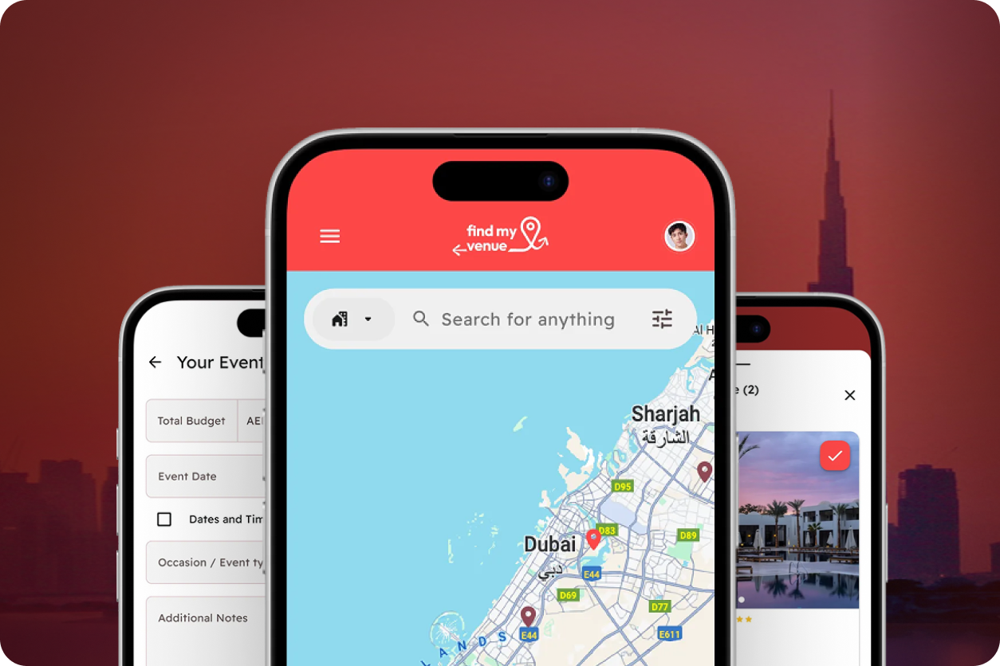
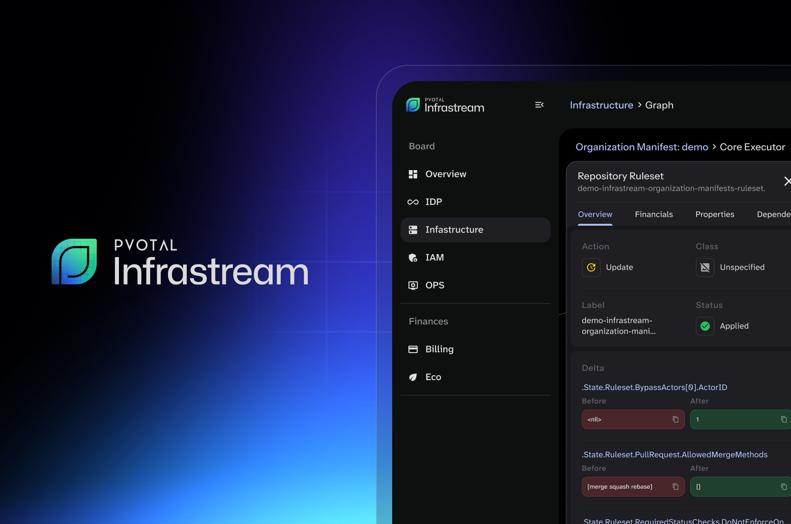
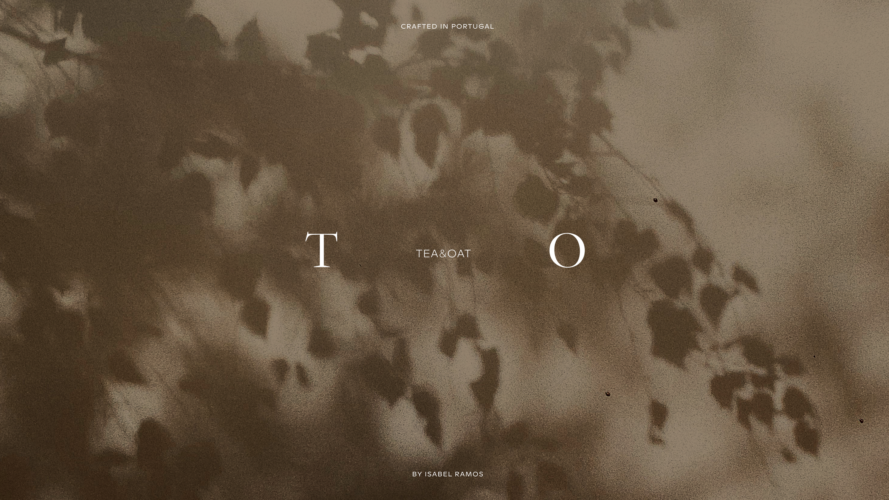
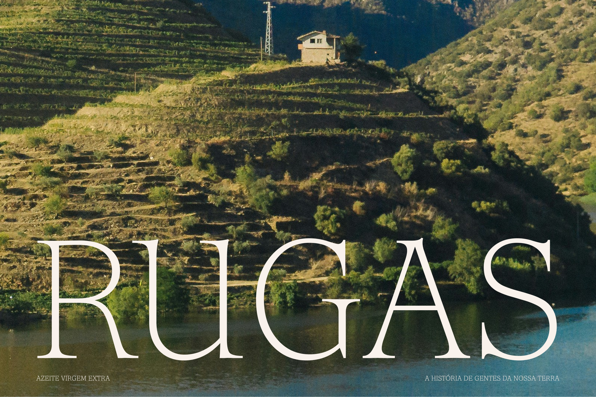

Find My Venue
UI design for a venue discovery platform, creating a clear and intuitive experience for searching, comparing, and enquiring about event spaces.
at Pvotal Technologies
Hi, I’m Mariana!
I design identities, interfaces and everything in between.

UX/UI for a cloud infrastructure SaaS platform, extending into branding and motion design for product communications and social media.
at Pvotal Technologies

A complete rebranding project for an architecture studio, extending from its visual language into its website and social media presence.
at 327 creative studio

UI design for a venue discovery platform, creating a clear and intuitive experience for searching, comparing, and enquiring about event spaces.
at Pvotal Technologies

A visual identity and packaging system for a jewellery brand, creating a refined visual language across its physical and digital presence.
at 327 creative studio

A visual identity for a Douro olive oil brand, translating the character and heritage of its farm into a distinctive bottle design and digital presence.
at 327 creative studio